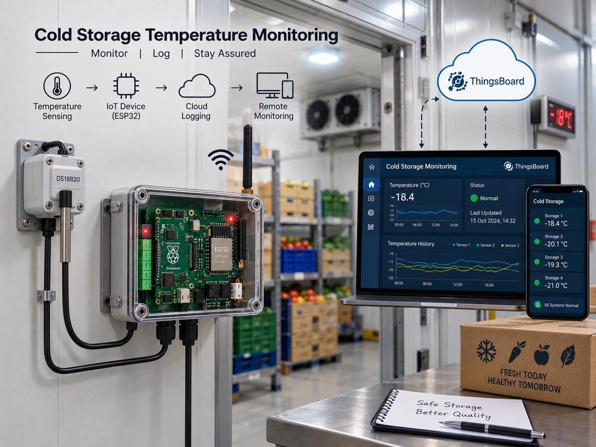

Past project · Industrial IoT
Temperature Monitoring
A system that watches the temperature at many points in cold storage and sends an alert as soon as something goes out of range.
- Many pointsTemperature probes
- LiveDashboard
- AlertsOn deviation

01. The problem
In cold storage, the temperature can slowly rise in one corner, maybe because a door was left open or a compressor is struggling. By the time someone checks, the stored goods may already be spoiled.
02. What we built
DS1820 digital temperature probes placed at several points, read by a Raspberry Pi. The readings go to a ThingsBoard dashboard, and an alert is sent when any value crosses its limit.
03. Key points
What it does
- Digital temperature probes at multiple points.
- Live data on a dashboard, with alerts when readings go out of range.
- Installed in industry and currently being tested there.
How it works
- ProbesDS1820 at several points
- Raspberry PiCollects the readings
- DashboardLive graphs
- AlertWhen a limit is crossed
- StaffAct in time
In the field
The system is installed in industry and is in its testing phase, running in the same kind of place it was designed for.